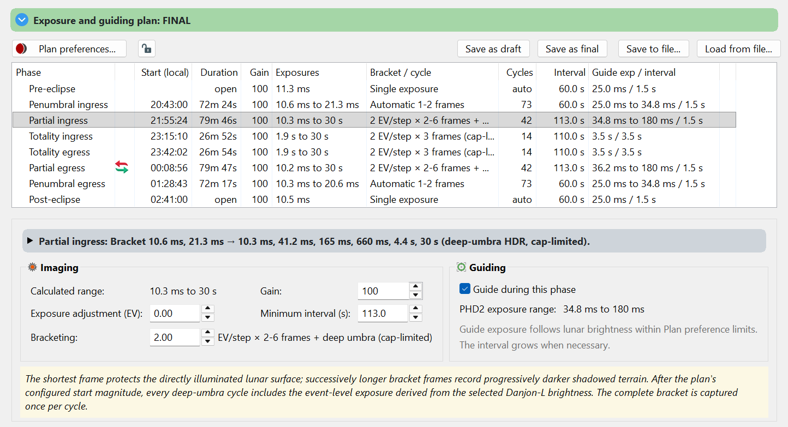
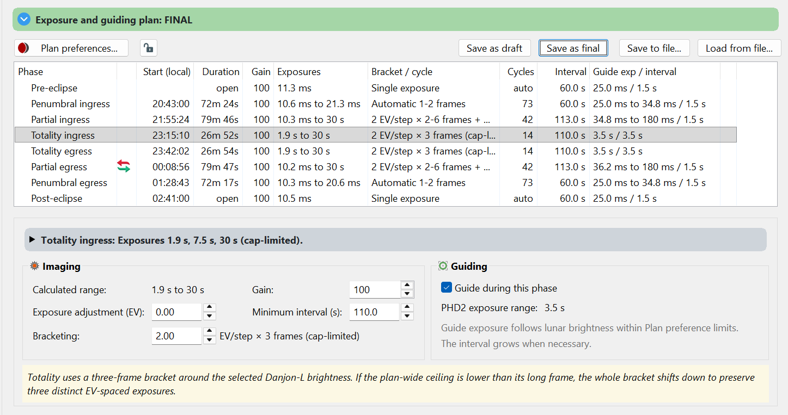

Phase editor
Review the adaptive exposure recipe and timing for each lunar phase.
Select and read a phase
Select a row in the plan table. For a total eclipse, the plan includes Pre-eclipse, Penumbral ingress, Partial ingress, Totality ingress, Totality egress, Partial egress, Penumbral egress and Post-eclipse. Greatest eclipse separates the ingress and egress portions. Partial and penumbral events contain only their applicable phases.
Expand the phase summary and Tips to see the exposure and timing explanation. Exposure ranges change with shadow geometry and altitude within a phase; they are not a single constant shutter setting.

Adjust the recipe
| Field | Meaning |
|---|---|
| Calculated range | Read-only exposure result derived from the model, phase adjustment and plan-wide ceiling. |
| Gain | Camera gain for this phase. Verify a gain change on your camera; it affects the image response. |
| Exposure adjustment (EV) | Shift the adaptive exposures. +1 EV doubles the exposure; −1 EV halves it. The exposure ceiling still applies. |
| Minimum interval (s) | Requested minimum spacing between imaging sets for this phase. It replaces the plan's Sets every value for this phase; the reset icon at the end of a changed row returns the phase to the plan's values. A set that takes longer starts the next one later. Fit set intervals and a change of the minimum guiding time can raise it, and so can Lengthen set interval; see guiding between sets. |
| Bracketing / EV per step | Spacing between bracket exposures. Smaller steps produce more closely spaced exposures and may increase the time needed per set. Pre/Post single-exposure phases do not use this field. |
| Guide during this phase | Enable or disable guide work for this phase. The PHD2 exposure range and interval follow the guiding model. |

Balance detail against timing
Review both short illuminated-surface exposures and the long shadow exposures. Compare bracket duration with interval and available guide time. If sets take too long, adjust cadence, the exposure ceiling or bracket spacing and inspect the result again.
The row warning icon
A warning icon at the start of a row marks a phase whose sets start further apart than its interval asks. Point at the icon to read why. Either each set takes longer than the interval, for example "Each set takes 87.2 s, longer than the 30 s set in Plan preferences.", or Lengthen set interval moved the sets apart to leave time for guiding, for example "Sets start every 106 s to leave at least 15 s for guiding between them. Each set takes 87.2 s; Plan preferences asks for 30 s." The table's interval, the set count, the storage estimate and the run all use the interval the tooltip gives.
The meridian marker
Two curved arrows beside a phase mark the phase in which the Moon crosses the meridian. When you select that phase, its details show MERIDIAN, and preflight’s Meridian crossing item gives the time of the crossing.
Meridian flips are not automatic: HelioMaker does not flip the mount. If yours must flip, supervise the flip yourself, and afterwards make sure the telescope frames the Moon correctly and guiding has resumed. You may need to stop the eclipse run with Stop run before the flip, then start it again with Start eclipse imaging once the Moon is framed and guided. The new run continues from the current phase; sets due while it was stopped are missed.
With Lengthen set interval, applying Plan preferences, changing a phase here or resetting it stores that interval as the phase's Minimum interval, and the icon clears. A Minimum interval you type yourself is kept until you next apply Plan preferences.
Per-phase changes are retained as overrides. Later edits to Plan preferences update untouched fields without erasing those deliberate overrides. Review every edited phase before saving a final plan.